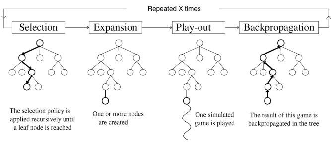
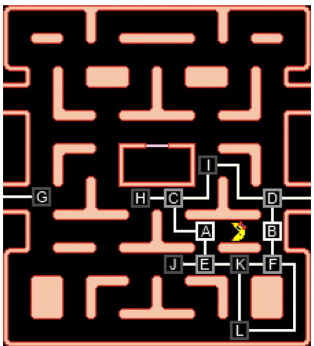
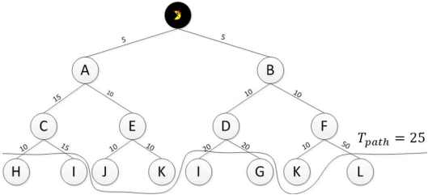

v.
Overview
Real-Time Monte Carlo Tree Search in Ms Pac-Man
- What? MCTS algorithm with several improvements
- Why? adapt MCTS to real-time domain - specifically for Ms Pac-Man
- How?
- variable-depth tree
- simulation strategies for both parties
- consider long-term goals in scoring
- reuse the tree with a decay factor
- Achievements Won CIG2012 and obtained 2nd place in WCCI2012
Why Ms Pac-Man?
- simple rules for both ghosts and Pac-Man
- complex planning and foresight to achieve higher scores
- real-time decision making makes it challenging
- recurring competitions as a testbed since 2007
Different Approaches
Most of them are rule-based, general techniques
- genetic algorithm
- neural networks
- search trees
- really successful between 2007 and 2011
MCTS agent won the game for the first time in 2011 - what are the challenges?
- uncertainty, large state space, open-endedness
MCTS Improvements
- Recall the improvements they've made:
- variable-depth tree construction
- simulation strategies for both parties
- consider long-term goals in scoring process
- reuse the tree with a decay factor
Why did they choose these approaches?
MCTS Improvements - Why?
- Recall the improvements they've made:
- variable-depth tree
- - strict time limit of 40ms
- simulation strategies for both parties
- - ghost: $\epsilon-greedy$ strategy
- Pac-Man: prioritised based on safety and rewards - - ghost: $\epsilon-greedy$ strategy
- consider long-term goals in scoring
- - competitions rules: eat ghosts quickly, higher scores, and clear the level
- reuse the tree with a decay factor
- - increase the number of simulations, enable long-term planning while overcoming bias of history
The Game: Ms Pac-Man
- A variant of the original Pac-Man
- Three lives initially, four different levels
- Losing a life? reset both Pac-Man and Ghosts
- Tick every 40 ms without skip
- Ghosts only make moves at junctions - possible global reverse (0.0015)
- Pac-Man can move forward, reverse, or technically "wait"
- If Pac-Man eats a pill: extra power, ghosts reversed, ghosts slowed down
- Extra life for every 10,000 scores
MCTS
- Recall the challenges in real-time games like Ms Pac-Man:
- uncertainty
- large state space
- open-endedness
- Advantages of MCTS:
- stop at any time
- built-in randomness
- no heuristic evaluation is required
MCTS Process
MCTS for Ms Pac-Man
Game Graph and Search Tree


Search Tree and Variable Depth
- junctions are nodes
- corridors are edges
- ghosts don't have a tree !
- game states are approximations
- no reverse moves
- - reduce simulation numbers
- search path is restricted by a distance limit $T_{path}$
- - avoid dangerous moves
- normalise path potential scores - - avoid dangerous moves
Reward Values for Nodes
- Each node stores three values: $tactic \in \{ghost, pill, survival\}$
- The cumulative sum of rewards:
$S_{tactic}^p=\sum_{n=1}^N R_{tactic,n}^p$
- - node $p$ with children set $C(p)$, visited $N$ times
- The mean reward: ${\bar S}_{tactic}^p=\frac{S_{tactic}^p}{N}$
- The maximum mean reward: $$M_{tactic}^p=\begin{cases} {\bar S}_{tactic}^p &\text{if } p \text{ is a leaf} \\ -\infty &\text{if } p \text{ is not in the tree} \\ max_{i\in C(p)}M_{tactic}^i &\text{otherwise} \end{cases}$$
Tactic Selection
- A tactic is chosen based on a constant threshold $T_{survival}$
- $tactic=ghost$ if (1) power pill was eaten; (2) edible ghosts are in the range; (3) the maximum survival rate is above the threshold
- $tactic=pill$ is the default tactic if (1) no edible ghosts in range; (2) the maximum survival rate is above the threshold
- $tactic=survival$ if the maximum survival rate of previous or current search is below the threshold
Node Values for Tactics
- Tactic selection before MCTS starts and reassessed at every search
- The value $v_i$ used for selection, backpropagation, and best move selection is: $$v_i = \begin{cases} M_{ghost}^i \times M_{survival}^i &\text{if tactic is ghost} \\ M_{pill}^i \times M_{survival}^i &\text{if tatic is pill} \\ M_{survival}^i &\text{if tactic is survival} \end{cases}$$
- The maximum survival rate $M_{survival}^i$ is used as a predictive node reward indicator
Search Tree Reuse
Why do they want to reuse the tree?
- 40 ms time frame significantly restricts the number of simulations per move
- MCTS method quality depends heavily on the number of simulations
- try to enable long-term reasoning via preference relation over goals
- - in danger in a later turn
- alternative path for potential higher score - - in danger in a later turn
Search Tree Reuse (2)
- Without tree reuse:
- - time-consuming
- no long-term planning
- agent become fickle and constantly switch back and forth between preferences - - time-consuming
- Reuse the tree without modification:
- - agent becomes too stubborn
Search Tree Reuse (3)
- Rule-based method to determine when to rebuild the tree
- - dealing with significant changes in the game state
- the stored information is outdated - - dealing with significant changes in the game state
- Decay the values stored between successive turns
- - previous turns still plays a role
- changes between turns are often small in real-time games
- the importance of past lowers over time - - previous turns still plays a role
Rule-based Tree Reuse
The tree will be rebuilt if:
- Pac-Man dies or new maze starts
- Pac-Man ata a blue ghost or a power pill
- - focus on eating remaining ghosts
- global reverse (0.0015) happens
Continuous Decay
Values stores at each node are decayed over time:
- early searches are biased by less simulation
- multiply the node's cumulative scores and visit count by a decay factor $\gamma$
- final move selection combines the decayed values and simulation rewards
- Traditional discounting UCT
- The experiment results confirmed that decaying values ($0<\gamma <1$) helps the game play compared to no decay ($\gamma = 1$) and no reuse ($\gamma = 0$)
Selection
- The UCT policy was used in selection to balance exploitation and exploration $$X_i=v_i+C\sqrt{\frac{\ln n_p}{n_i}}$$
- $v_i$ the score of the node, $n_i$ the visit count, $C$ the exploration constant
- UCT policy is used when:
- - all children's visit counts is above a threshold $T_{visit}$ (15)
- or random uniform selection - - all children's visit counts is above a threshold $T_{visit}$ (15)
- Less visits may miscategorise a safe and /or rewarding node due to a random loss in the first time it was expanded
Simulation
- combines 2 steps:
- - selection steps as described above
- playout step - - selection steps as described above
- The selection may be interrupted due to unpredictable game changes:
- - Pac-Man dies: playout starts from the last visited junction
- Pac-Man eats a ghost or power pill: simulation terminates immediately, don't waste time - - Pac-Man dies: playout starts from the last visited junction
- The backpropagation started from an internal node rather than the leaf node if the selection was interrupted
Playout
- The goal of playout is both short- and long-term safety and reward
- If the selection was not interrupted, the playout always starts from a junction leaf node
- Recall the game ending state: (1) no more lives; (2) after 24,000 time units
Playout Stopping Conditions
- Pac-Man dies
- New maze started
- A preset number of time units have passed: $T_{time}=T_{path}+T_{simulation}$ (add distance limit of a path and simulation time constraint)
- - ensure each simulation has the same length in time and the same scoring potential
- Three scores for each simulation: $(R_{survival}, R_{pill}, R_{ghost})$
- - $R_{survival}$ is either 0 or 1
- $R_{pill} \in [0,1]$ number of pills eaten normalised by total number of pills
- $R_{ghost} \in [0,1]$ number of ghosts eaten normalised by total edible time - - $R_{survival}$ is either 0 or 1
Ghost Move
- $\epsilon -greedy$ strategy
- - $\epsilon < 0.2$: random move at junctions
- otherwise, strategic rules - - $\epsilon < 0.2$: random move at junctions
- It tries to:
- - ensure Pac-Man loses a life
- ensure the lowest ghost rewards $R_{ghost}$ for Pac-Man
- limit the number of pills Pac-Man can eat - - ensure Pac-Man loses a life
Ghost Move (2)
- It's not edible
- immediately traps Pac-Man if it can
- follow the shortest path to Pac-Man if it in the immediate vicinity
- closer to a junction than Pac-Man, block
- Pac-Man is on adjacent edge and no other ghosts in the same direction, go to the edge to block
- otherwise, move closer to the junction in front or behind Pac-Man
Ghost Move (3)
- It's edible
- - move as far as possible from Pac-Man
- On an edge that has another ghost in same direction
- - avoid this move and choose another move
- spread out the map for trapping Pac-Man - - avoid this move and choose another move
Pac-Mac at Junction
Safe move: (1) no non-edible ghost on its direction and (2) next junction is safe
- Reachable edible ghost: time to eat is smaller than edible time left
- Safe move leads to edge with pills
- All safe edges are cleared, random choice
- No safe move, random move
Pac-Man on Edge
- Maintain it's direction until
- Reverse is necessary
- - non-edible ghost heading for it on the path
- a power pill was eaten, move to the closet edible ghost if available - - non-edible ghost heading for it on the path
Long-term Goal
- Time is an important aspect of Ms Pac-Man
- Eat ghosts as fast as possible
- Gain a life for every 10,000 points
- $R_{ghost}$ is the edible time remaining before eaten
- After eating a pill, she must achieve a ghost score higher than 0.5 or have 0 reward
- - ate ghost after eating pill: $R_{pill} = R_{pill} + R_{ghost}$
- otherwise, $R_{pill} = 0$ - - ate ghost after eating pill: $R_{pill} = R_{pill} + R_{ghost}$
- Try to clear long edges when it's safe to do so:
- $R_{edge}=num\_pills(e_i)^p$ as edge score where $1< p< 2$
Backpropagation
- May happen from an internal nodes in the interrupted selection step
- Propagate maximum children scores
- Recursively executed til root node
Final Move
- if the maximum survival rate is below a threshold: fall back to the survival tactic
- otherwise, determine scores based on the current tactic
- no feasible rewards, switch between $ghost, pill, survival$ in turns
Experiment Results
- carry out experiments against 5 different ghost models
- prove effectiveness of the improvements to MCTS
- compare the results of turning off the 4 improvements one at a time
- - simulation strategy has the biggest impact
- ranked 2nd in WCCI'12 among 63 teams
- winner of CIG'12 among 36 teams with 67.6% winning rate
- possible future improvements if ghost models are publicly available
Lessons Learnt
- MCTS can be a powerful tool in real-time domains
- Think carefully about the structure of your writing
- Avoid referring to sections that appear later in your paper (recommendation)
- Cause ambiguous understanding
- Break fluent reading
- Avoid repeating yourself - even a few sentences
Questions?